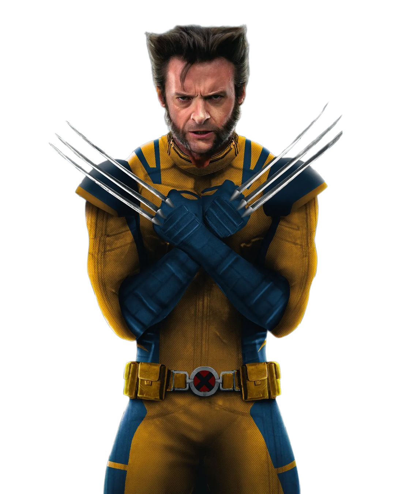

who am i
I'm an aspiring graphic designer passionate about creating visuals that connect ideas with people. I love exploring how design shapes the way we experience brands, whether it's through a website, a logo, or a campaign.
campaign designing
These visuals are a part of my campaign design for 7 Eleven, we as a team rebranded 7 Eleven from its logo to packaging. The visuals presented in this slide were created by me from the campaign posters made on Adobe Illustrator to its packaging and its Instagram page layout.
The “Maa 0.2” campaign reimagines the emotional essence of care, nourishment, and everyday convenience through the lens of a modern mother. By aligning with 7-Eleven’s core identity as a trusted neighborhood brand, the campaign transforms the store’s personality into that of a caring, tech-savvy “Maa” — one who balances tradition and modernity effortlessly.
The rebranding integrates updated logos, packaging, and color palettes to center the campaign's human touch. Soft tones inspired by home kitchens, blended with 7-Eleven’s traditional palette, create a clean visual identity that highlights empathy, readiness, and emotional connection, turning everyday purchases into a gesture of care.
visual designing
This infographic was designed to creatively summarize the Deadpool & Wolverine (2024) film using a playful, comic-inspired layout that reflects Deadpool’s chaotic and humorous personality. Built entirely on Adobe Illustrator, the piece combines bold type, witty character callouts, and vector graphics to present key movie information in an engaging and visually balanced format.
Overall, the infographic functions as a fun, stylized data visualization that merges film facts with character storytelling—reflecting both the movie’s energy and the designer’s creative control over layout, typography, and humor integration within Illustrator.
packaging design
Kiaan and His Watermelon is a playful and imaginative children's book created for ages 3-6 years. The story revolves around Kiaan, a curious young boy who accidentally swallows a watermelon seed and begins to believe a giant watermelon might grow inside his tummy. The narrative humorously captures the blend of childhood imagination and innocence, while gently teaching kids about food, curiosity, and logic.
packaging design
The GranMade project focuses on branding and identity design for a social enterprise that empowers elderly women by selling hand-stitched and handmade products. The visual identity was created to reflect warmth, compassion, and purpose—values that define the brand’s essence.
Email:
anshgandhi3979@gmail.com
Phone:
+91 99785 77794
Address
Sunteck BKC, 51, Lal Bahadur Shastri Marg, Kurla West,
Mumbai, Maharashtra
400070